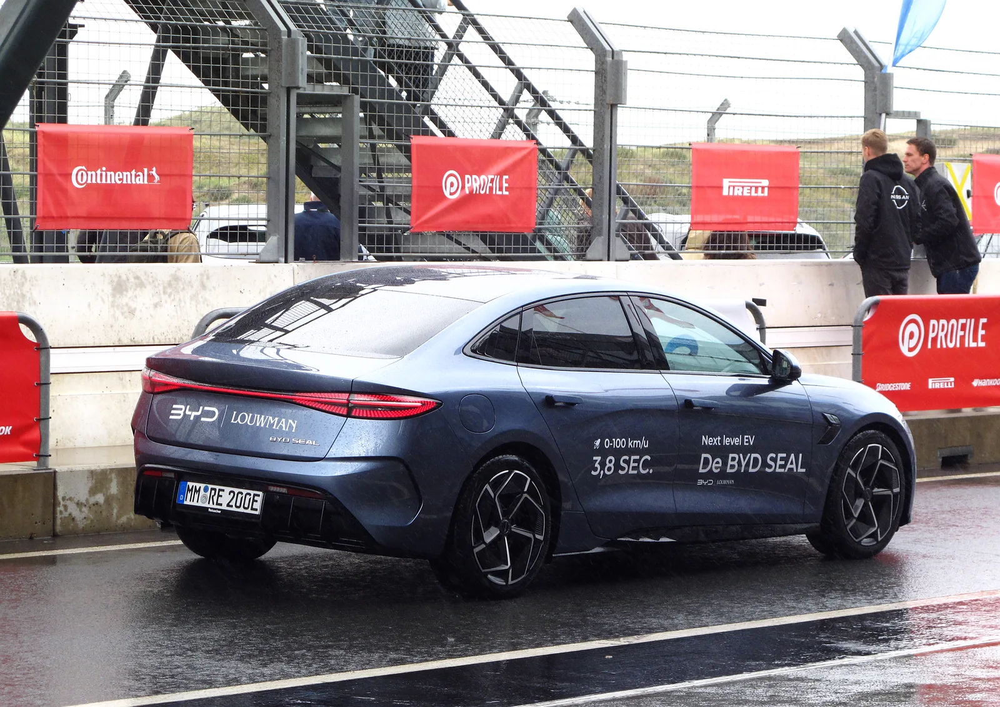
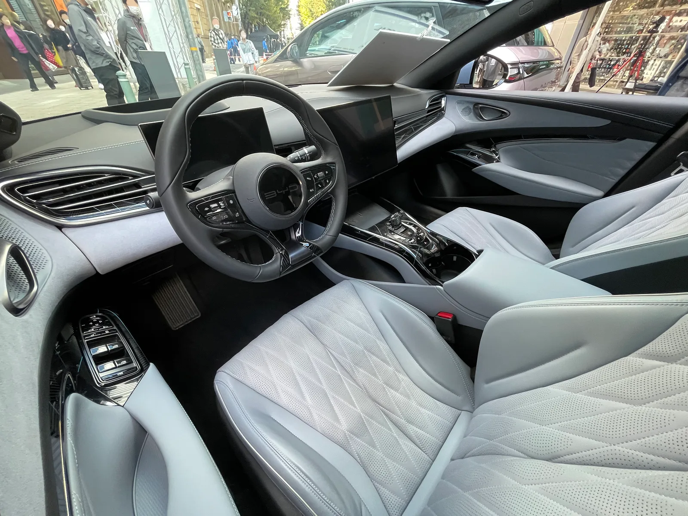

▲ BYD 씰. 3,990만 원부터 시작하는 BYD코리아 최초의 정통 세단이다 ⓒ BYD코리아
BYD코리아가 2026년 2월 중형 전기 세단 '씰(SEAL)'의 후륜구동(RWD) 트림을 국내에 출시했다. 그동안 국내에 상륙한 BYD 전기차는 씨라이언6(플러그인 하이브리드)와 씨라이언7(SUV)까지, 모두 SUV 혹은 크로스오버 형태였다. 씰은 BYD코리아가 처음 선보이는 정통 4도어 스포츠 세단으로, 테슬라 모델3를 정면으로 겨냥한 모델이라는 평가가 나온다. 실제 시승기와 가격표를 취합해 정리했다.
1. 씨라이언과 다른 길 — 왜 세단인가

▲ BYD 씰의 로우 세단 실루엣. 씨라이언 시리즈의 SUV 차체와는 완전히 다른 포지션이다 ⓒ BYD코리아
BYD코리아는 씨라이언6·7으로 국내 중형 SUV·PHEV 시장에 안착한 뒤, 세 번째 카드로 세단인 씰을 꺼냈다. 씨라이언 시리즈가 기아 쏘렌토·스포티지급 SUV 수요층을 겨냥했다면, 씰은 낮고 매끈한 세단 차체로 준중형~중형 스포츠 세단 구매층, 특히 테슬라 모델3 구매를 저울질하던 소비자를 정조준한다. 'Ocean-X' 아키텍처를 기반으로 한 전용 전기차 플랫폼에 82.56kWh 블레이드 LFP 배터리를 얹었는데, 이는 씨라이언7과 동일한 용량대다. 다만 차체가 낮고 공기저항계수가 작아 같은 배터리로도 세단 특유의 효율을 노릴 수 있다는 게 BYD 측 설명이다.
2. 트림별 가격 — 3,990만 원부터, AWD는 4,690만 원
씰은 출시 당시 후륜구동(RWD) 단일 트림으로 3,990만 원에 시작했다. 이후 상위 사양을 더한 '플러스' 트림이 4,190만 원에, 전후 듀얼모터를 얹은 최상위 '다이내믹 AWD'가 4,690만 원에 추가되며 현재 3개 트림 체제로 운영된다. 친환경차 세제혜택을 적용한 가격이며, 국고·지방 보조금을 더하면 실구매가는 두 트림 모두 3,000만 원대까지 내려간다는 것이 딜러망의 설명이다.
| 트림 | 가격 | 모터 구성 | 시스템 출력 | 제로백 |
|---|---|---|---|---|
| RWD | 3,990만 원 | 후륜 싱글모터 | 230kW(약 313마력) | 5.9초 |
| 플러스 | 4,190만 원 | 후륜 싱글모터 | 230kW(약 313마력) | 5.9초 |
| 다이내믹 AWD | 4,690만 원 | 전후 듀얼모터 | 390kW(약 530마력) | 3.8초 |
세 트림 모두 82.56kWh 블레이드 LFP 배터리를 공유하며, 인증 복합 주행거리는 407km, 저온 환경에서는 371km 수준이다. 다이내믹 AWD는 전륜 160kW·후륜 230kW 모터를 조합해 합산 390kW(약 530마력)를 내며, 정지 상태에서 시속 100km까지 3.8초에 도달한다. 배터리 용량은 같은데 출력이 크게 오른 만큼 AWD 트림의 실주행 전비는 RWD 대비 다소 낮을 수 있다는 점은 감안할 필요가 있다.

▲ 모터쇼에 전시된 BYD 씰. 국내 3개 트림 모두 이 기본 차체를 공유한다 ⓒ BYD
3. 시승 소감 — "주행·정숙·가격 3박자"

▲ BYD 씰(유럽 사양) 후면. 유럽에서는 서킷 시승 행사로 다이내믹 AWD의 가속 성능을 홍보했다 ⓒ Wikimedia Commons
국내 매체 시승기들은 공통적으로 '주행·정숙·가격'을 씰의 세 가지 강점으로 꼽는다. 헤럴드경제는 씰을 두고 "바다를 닮은 부드러운 승차감"이라고 표현했고, 디지털데일리는 "4050 실속파들이 선택한 이유"라는 제목으로 씰의 가성비를 조명했다. 아주경제·후속 시승기에서는 정지 상태에서 시속 100km까지 5.9초에 도달하는 RWD 기준 가속력을 두고 "전기차 특유의 정숙한 주행에 빠른 가속력이 장점으로 다가왔다"는 평가가 이어졌다.
스티어링 휠의 버튼으로 가로형 15.6인치 인포테인먼트 디스플레이를 세로로 회전시킬 수 있는 기능도 시승기마다 반복적으로 언급되는 요소다. 내비게이션 화면을 세로로 길게 볼 수 있어 목적지 탐색이 한결 수월하다는 평가다. 운전석에는 경주용 차량을 연상시키는 퀼팅 시트가 적용돼 몸을 안정적으로 잡아주면서도 쿠션감이 적절하다는 반응이 많았다.
4. 실내 마감 — 씨라이언과 이어지는 완성도

▲ BYD 씰 실내. 회전형 15.6인치 인포테인먼트와 퀼팅 시트가 특징이다 ⓒ Wikimedia Commons
씨라이언7 시승기에서 반복됐던 "과거 중국차 이미지에서 벗어난 마감"이라는 평가는 씰에서도 이어진다. 조립 품질과 내장재 질감에서 뚜렷한 결함을 지적하는 시승기는 찾기 어렵고, 스티어링 휠·시트 등 운전자가 직접 손이 닿는 부위의 마감이 가격대 대비 준수하다는 반응이 공통적이다. BYD코리아는 아울러 전국 34개 전시장과 20개 서비스센터, 누적 1만 5,000대 이상의 국내 운행 상용차 실적을 앞세워 애프터서비스 우려를 정면 돌파하겠다는 전략을 펴고 있다.
씨라이언6·7 대비 씰의 차이
씨라이언6(PHEV, 3,750만 원)와 씨라이언7(전기 SUV, 4,490만~4,690만 원)은 모두 SUV 차체다. 씰은 이들과 달리 세단 차체를 택해 공기저항계수가 낮고 전비 효율이 좋다는 점, 그리고 테슬라 모델3와 동급 세단 시장에서 직접 경쟁한다는 점이 가장 큰 차이다. 가격은 씨라이언7보다 오히려 500만 원가량 낮은 3,990만 원부터 시작한다.
5. 종합 — 모델3 대안이 될 수 있을까
씰의 가장 직접적인 경쟁자는 테슬라 모델3다. 국내 모델3 후륜구동 트림이 5,000만 원대에서 시작하는 것과 비교하면, 씰 RWD(3,990만 원)는 1,000만 원 이상 저렴하면서도 비슷한 체급의 배터리와 편의 사양을 갖췄다. 물론 테슬라 슈퍼차저 네트워크나 브랜드 잔존가치 면에서는 아직 격차가 있다는 지적도 나온다. 그러나 시승기들이 공통적으로 짚는 지점은 "가격 차이만큼의 상품성 격차는 이제 크지 않다"는 것이다. 씨라이언6·7으로 SUV 시장에서 존재감을 넓힌 BYD코리아가, 씰을 통해 국내 전기 세단 시장에서도 유의미한 점유율을 확보할 수 있을지 주목된다.
체크포인트
- 씰은 씨라이언6·7과 달리 정통 4도어 세단이며, 테슬라 모델3와 직접 경쟁하는 포지션이다.
- 가격은 RWD 3,990만 원 / 플러스 4,190만 원 / 다이내믹 AWD 4,690만 원 3개 트림.
- 전 트림 82.56kWh 블레이드 LFP 배터리 공유, 복합 주행거리 407km.
- 다이내믹 AWD는 390kW(530마력)로 제로백 3.8초의 고성능 세단이다.
- 시승기들은 "주행·정숙·가격 3박자"를 공통 강점으로 꼽는다.